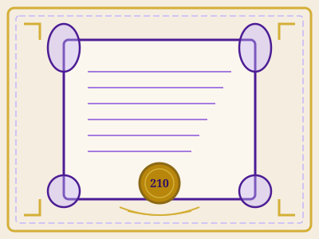

NIA 210 — Acuerdo de los Términos del Encargo
ISA 210: Agreeing the Terms of Audit Engagements
Introducción y Objetivo
Objetivo de la norma: El objetivo del auditor es aceptar o continuar un encargo de auditoría solo cuando la base sobre la cual se va a realizar haya sido acordada, mediante:
- Establecer si las condiciones previas para una auditoría están presentes.
- Confirmar que existe un entendimiento común entre el auditor y la dirección de los términos del encargo.
La NIA 210 (ISA 210) aborda las responsabilidades del auditor al acordar los términos del encargo de auditoría con la dirección de la entidad y, cuando sea apropiado, con los responsables del gobierno corporativo.
Esta norma establece los requisitos para evaluar si las condiciones previas para la auditoría están presentes y para formalizar el acuerdo mediante una carta de encargo.

Acuerdo de los Términos del Encargo de Auditoría
Alcance y Aplicación
Alcance: Esta norma se aplica a la aceptación y continuación de encargos de auditoría de estados financieros.
Aplicación
La NIA 210 se aplica cuando:
- Se acepta un nuevo encargo de auditoría de estados financieros.
- Se continúa un encargo de auditoría existente.
- Se modifican los términos de un encargo existente.
Relación con otras NIA
- NIA 220: Gestión de la calidad a nivel de encargo.
- NIA 230: Documentación de auditoría.
- NIA 300: Planificación de la auditoría.
Definiciones Clave
Encargo de Auditoría
Acuerdo entre el auditor y la entidad para realizar una auditoría de estados financieros.
Condiciones Previas
Requisitos que deben cumplirse antes de aceptar o continuar un encargo.
Carta de Encargo
Documento que registra los términos acordados del encargo.
Marco Contable
Marco normativo aplicable (NIIF, NIIF para PYMES, etc.).
Responsables del Gobierno
Persona(s) designadas para supervisar la dirección estratégica.
Auditorías Recurrentes
Encargos que se repiten en períodos sucesivos.
Requerimientos Principales
1. Condiciones Previas
- Marco de información financiera: Evaluar si es aceptable.
- Responsabilidad de la dirección: Obtener acuerdo sobre preparación de estados financieros, control interno y acceso a información.
2. Acuerdo de Términos
- Alcance de la auditoría.
- Responsabilidades del auditor y de la dirección.
- Forma de comunicación de resultados.
3. Carta de Encargo
- Documentar términos por escrito.
- Incluir objetivo, responsabilidades y referencias al marco contable.
4. Auditorías Recurrentes
- Evaluar si circunstancias requieren modificar términos.
- Recordar términos existentes a la entidad.
Audio Resumen
Reproduce el resumen en audio de la NIA 210 (aproximadamente 2-3 minutos).
📜 Guion del Audio:
NIA 210, Acuerdo de los Términos del Encargo de Auditoría. Esta norma internacional de auditoría establece las responsabilidades del auditor al acordar los términos del encargo de auditoría con la dirección de la entidad y, cuando sea apropiado, con los responsables del gobierno corporativo. El objetivo principal de la NIA 210 es asegurar que el auditor solo acepte o continúe un encargo de auditoría cuando la base sobre la cual se va a realizar haya sido adecuadamente acordada entre las partes. Para lograr esto, la norma establece dos requisitos fundamentales. Primero, el auditor debe determinar si las condiciones previas para la auditoría están presentes. Esto implica evaluar si el marco de información financiera aplicable es aceptable. Además, el auditor debe obtener el acuerdo expreso de la dirección sobre sus responsabilidades fundamentales: la preparación de los estados financieros, el establecimiento de un sistema de control interno adecuado, y proporcionar acceso irrestricto a toda la información relevante. El segundo requisito fundamental es el acuerdo de los términos del encargo, que debe documentarse en una carta de encargo de auditoría. Para auditorías recurrentes, el auditor debe evaluar si las circunstancias actuales requieren modificar los términos del encargo. En resumen, la NIA 210 establece las bases para una relación profesional clara y bien definida entre el auditor y la entidad.
Fuentes y Bibliografía
- International Auditing and Assurance Standards Board (IAASB). International Standard on Auditing 210: Agreeing the Terms of Audit Engagements. IFAC, 2021.
- IAASB. Handbook of International Quality Control, Auditing, Review, Other Assurance, and Related Services Pronouncements. IFAC, 2022.
- Federación Internacional de Contadores (IFAC). Normas Internacionales de Auditoría. www.ifac.org
- Instituto Mexicano de Contadores Públicos (IMCP). NIA 210: Acuerdo de los Términos del Encargo de Auditoría.